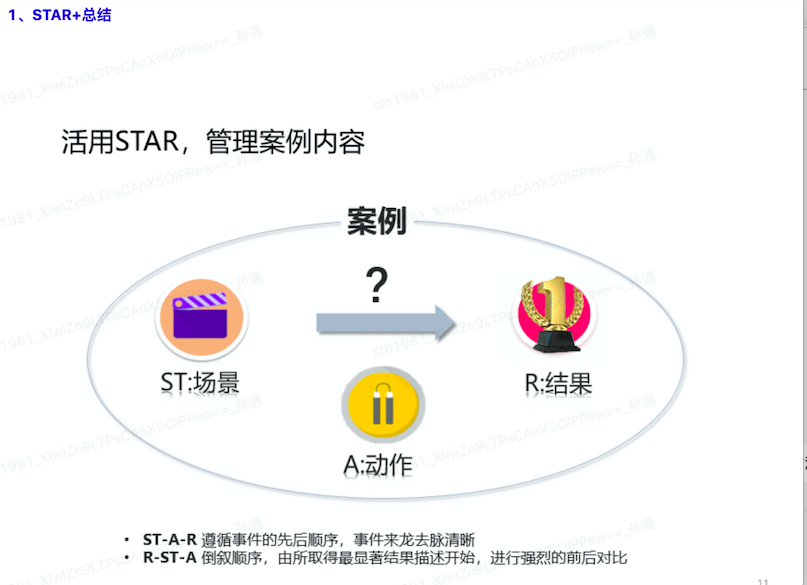

概述
- 工作了很多年，平均每半年写一次绩效报告, 已经写了几十次报告了. 总结一下写绩效报告的几个注意点.
一 为什么要写绩效报告(年终总结)
- 本质上是对自己一年以来工作的回顾和总结，从中找出经验和教训，找出规律性的知识，为来年的工作做的更好。当然，这也是一次管理者对于下属更全面的了解，对管理好每位下属和绩效考评都有一定的参考意义。
二 怎么写好年终总结呢？
1、列举出今年做的最满意的五件事
我认为，你至少要列出你最满意的五件事，这五件事可以是日常工作，也可以是难的事或者有挑战的事亦或是非常有价值的事。 那么有了这五件事，怎么去写出我们工作的亮点呢？我们继续看下文。
2、从四个思维来分析每件事
我的读者大部分都是程序员/产品经理，我建议你从以下四个维度来总结，一定会让你的领导眼前一亮：
a、结果维度
结果这个维度是关注你做的事带来的价值，不同类型的团队在结果表现上会有一些差异。
如果你是业务开发团队，从业务维度来总结是必然的，例如某个业务用户的日活/月活是什么。对于技术优化类需求来说，主要去思考技术优化给业务带来的价值是啥？比如这个技术优化让业务 P2 故障从 3 次减少到 0 次。
如果你是团队 leader，对于你的管理措施产生的结果，这衡量的方法是效率和质量提升如何。
如果是你中间件/基础架构团队，我建议你的结果从系统的性能、可用性和成本来总结。
如果你是支撑团队，也就是运维/测试/效率工程等团队，我建议你从质量、效率和成本的方面进行思考和总结。
b、数据维度
第二个维度是数据，没有数据就没有办法量化，也就没法比较和改进，所以数据非常重要！
比如像“提升了系统性能”这种比较虚的描述，应该改成 TPS/QPS 从多少提升到了多少这种具体的描述才是正解。
通过数据描述结果的时候，你不但要列出相关的数据，而且要对这些数据背后的含义了如指掌，尤其对于数据的评价标准，通过对数据的评价可以培养我们业务思维。
比如，同样是将某 APP 的日活提升 5%，对于比较稳定的产品如支付宝这样的业务是非常难的，但对于一个新业务是不够的，同样的道理，从 10% 提升 15% 和从 80% 提升 85% ，含义迥异。 再比如，你把某核心系统可用性从 98% 提升到 99 % 和从 99% 提升到 99.999% ，后者需要付出的成本和难度远超于前者。
很多时候，我们感觉这个事好像没有办法用数据来描述。但事实是，不是不能用数据来描述，而是你没有搜集相关数据，没有养成这种习惯罢了。
c、技术维度（产品同学就是专业领域）
对于程序员来说，做完一个项目或者方案之后，技术有哪些提升，学到了什么新技术或者有了什么更深的领悟，都可以试着系统地总结一下，这很重要！
比如，我们在设计方案时用了 redis 缓存，但是这不代表我们对缓存的理解深入和全面了，我们具体落地的过程中遇到什么坑和怎么解决的，比如缓存穿透怎么办？不同业务场景的缓存的过期时间如何设置？是否需要再考虑二次缓存等等，这些都是需要事后整理和总结的。
技术的其他领域可以推而广之。
d、成长维度
除了以上技术的提升之外，你还需要关心个人综合能力的成长， 也就是软技能的提升。比如对业务的理解、项目管理、跨团队协作、沟通能力和做事方法等等。 这些能力可能在低阶程序员的年终总结上没那么重要，但是对于架构师/技术经理级别以上的同学就非常重要了。 以对业务的理解为例，你可以从以下角度来思考：
- 业务的场景是什么？
- 业务的目标用户是谁？
- 目标用户有什么特点？
- 产品解决了目标用户什么问题？
- 用户为什么喜欢/讨厌这个新功能？
- 这款产品的变现方式是什么？
- 竞争对手的产品和我们产品的差异在哪里？
3、我们存在的问题和如何改进
比如，以下是大部分年轻程序员的通病，我们可以说我自身缺点专业技术基础比较差，不太善于过多的交际，尤其是和陌生人交往有一定的难度，办事比较毛躁，准确性有时不够。
另外全局意识不够强。有时做事情、干工作只从自身出发，对公司及项目作出的一些的重大决策理解不透，尽管也按领导要求完成了要做的工作，心理上还是有一些其他的想法。在工作中还存在看到、听到、想到但还没做到的情况，还需要进一步增强责任感和个人自驱力。
4、明年的规划和方向
除了，你可以根据所属业务开发/技术架构/支撑团队关注不同来规划（具体可以参考前文结果部分）明年的方向之外，还可以从以下三个方面来规划未来一年：
4.1 提高个人专业能力。
比如，把自己的技术能力从 P5 提升到 P6 ，那么具体就要在日常工作中，加强专业知识的学习，积累丰富的专业知识，从严要求自己，果断发现和解决问题。 要以严谨的工作态度与良好的沟通协作能力，努力提高自身的综合素质，踏踏实实做好手中的每一件事，从每天的一点一滴中多反思、多学习、多交流，不断的总结。
4.2 提升语言沟通和合作能力。
在实际工作中，要更加积极主动地向领导/资深同事请教遇到的问题，并多与同事们进行沟通，学习他们处理实际问题的方法及工作经验。通过多学、多问、多想来不断提高自己的实际工作能力。
4.3 培养个人兴趣爱好。
有兴趣爱好的人，生活才会快乐，就像我喜欢编程一样，除了技术/软技能/成长的等方面的知识，身体也很重要，在平时生活中，加强锻炼，提高身体素质，身体是 1，其他全是 0 。 年终总结绝对是一次绝佳的反思、复盘、改进和提升自我的机会，各位请认真面对吧！
三 绩效内容的来源
SRE 工程师的价值就是为业务提升效率、降低成本、提升稳定性, 必须要从以下几个方面进行总结.
- 从 0 到 1, 做了 XXXX, 产生了多少多少价值.
- 从 1 到 N, 做了 XXXX, 产生了多少多少价值.
- 解决 XXXX 重大隐患, 提升了稳定性.
四 注意事项
-
- 每半年是一个考核周期, 但平时就要有意识总结自己的半年绩效，而不是半年到了(PM 通知了绩效报告提交日期)再梳理.
-
- 回顾重点工作案例时, 分为
背景、成果、个人主要工作3 个部分论述. 成果部分一定要形成量化指标, 注意图胜表、表胜文、一图胜千言.
- 回顾重点工作案例时, 分为
-
- 多用以下关键语句：
-
- xxxx 方案设计和实现(比如 XXX 产品防 DDOS 方案的设计和实现)
-
- 从 0 ～ 1 ，从 1 ～ N，优化和改进现有流程。提升了效率，降低了成本，提升了稳定性。解决了重大隐患.
-
- 量化指标形容词: 高低、快慢、长短、通用、顺畅、强弱 ......
-
- 指标: 成熟度、成功率、通过率、覆盖率 ......
-
- 指导新人完成 xxxx
五 如何进行绩效考核
总体来说就是参考长跑运动, 以半年为期限, 看是否跑到目标线.
- 如果刚好跑到了, 那么绩效结果整体上就是
符合预期 - 如果超出了, 那么绩效结果整体上就是
超越预期 - 如果没有跑到, 那么绩效结果整体上就是
不符合预期
绩效的内容
-
SRE 工程师的绩效内容分为 3 大块:
业务、工程化、基础 -
- 业务部分, 总体来说就是给手上运维的业务，做出一些优化、确保服务好业务. 比如
实现自动化扩缩容、完成大规模活动上线支持等. 另一种分法就是日常稳定性和重保稳定性
- 业务部分, 总体来说就是给手上运维的业务，做出一些优化、确保服务好业务. 比如
-
- 工程化, 主要是指
多个项目通用的运维工具的开发、维护、迭代等目标.
- 工程化, 主要是指
-
- 基础, 是 SRE 岗位的一些基础指标和一些软素质方面的目标. 其中基础指标最最重要的是
每半年都是0故障运维, 软素质方面包含了一些沙龙分享、新人指导等目标.
- 基础, 是 SRE 岗位的一些基础指标和一些软素质方面的目标. 其中基础指标最最重要的是
六 如何进行述职
总体就是 STAR 原则, 但是分 2 个版本, 灵活运用
1 版本 1, 更加偏向于先对齐 OKR
STAR 原则
- 处境（situation）
-
- 在什么样的环境下
-
任务(task)
-
- 接到了什么样的任务
-
行动(action)
-
- 然后具体是怎么落地的
-
结果(result)
-
- 拿到了什么结果
2 版本 2, 更加偏向于具体一线事务/个人 or 小团队特有漂亮产出
